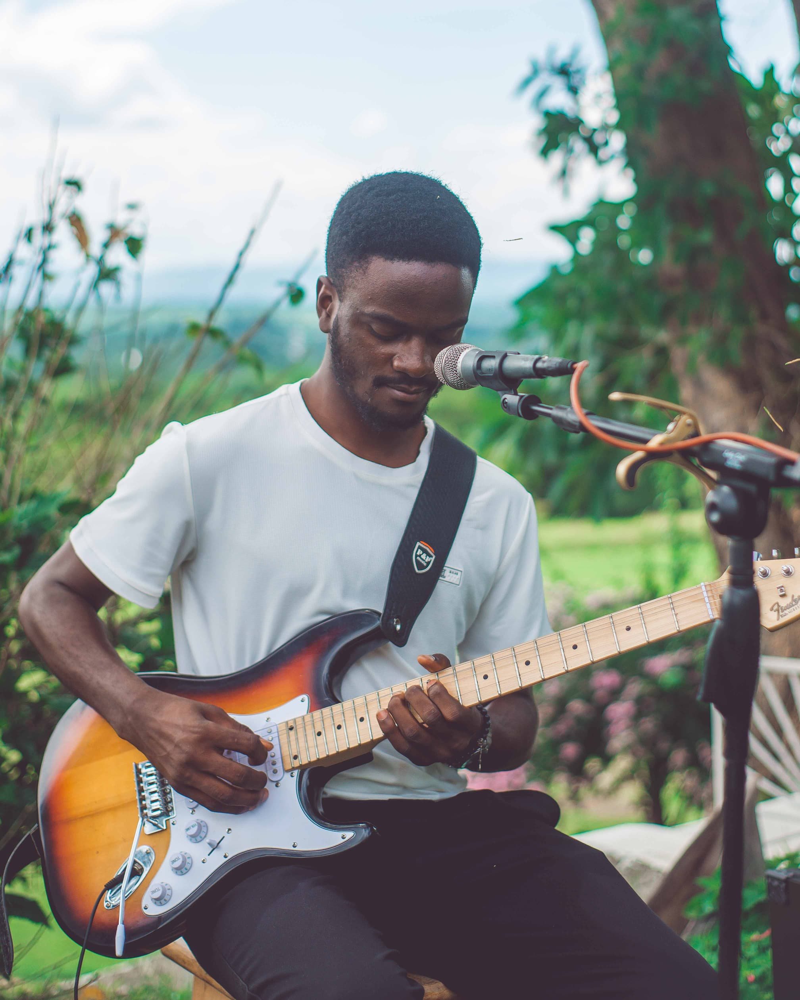
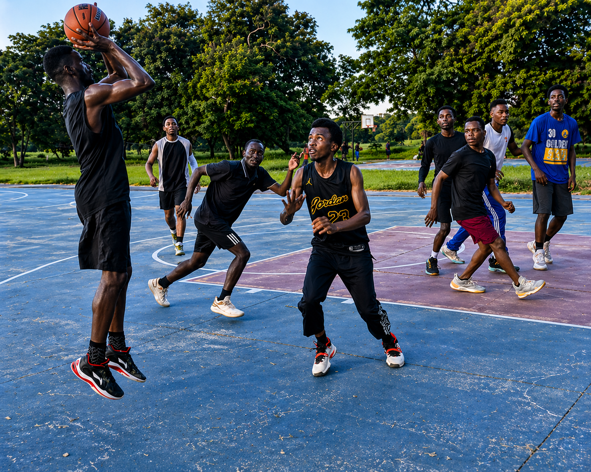

Passionate IT student, ready for continuous learning, and growing my
skills and career in the IT field. I’m open to connecting with professionals,
mentors, and opportunities where I can contribute and keep learning.
Am also a passionate and skillful musician, speciallizing mostly
with the guitar.
| INSTITUTION | QUALIFICATIONS | YEARS |
|---|---|---|
| University of Dar es Salaam | BSc. Computer Science | 2025-present |
| Mbeya University of Science and Technology | Diploma in Computer Science | 2017-2020 |
| Marist Boys Secondary School | Certificate of Secondary Education Examination | 2013-2016 |

